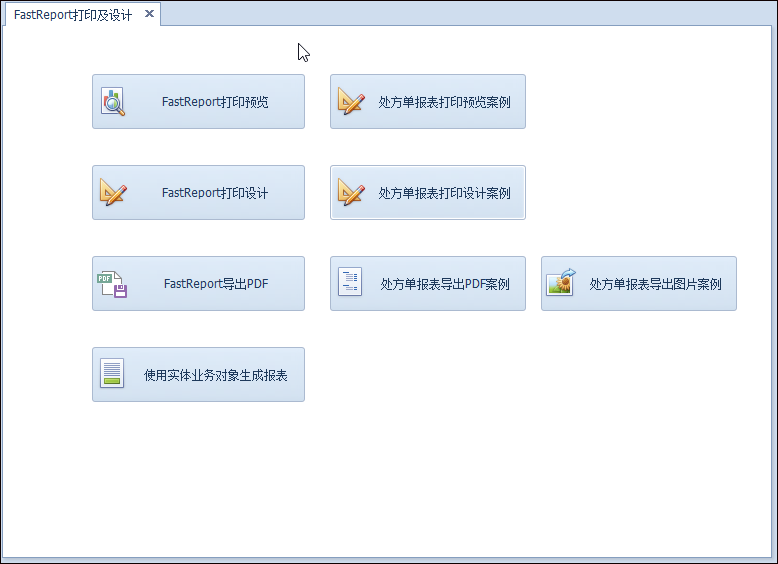

原文连接:https://www.cnblogs.com/wuhuacong/p/11975411.html
之前我在随笔《使用FastReport报表工具生成报表PDF文档》介绍过使用FastReport.Net来根据报表模板进行生成PDF，以及随笔《使用FastReport报表工具生成标签打印文档》介绍过生成标签文档的处理，基本上都是基于模板进行生成PDF的做法，由于PDF在手机端显示总是觉得不那么方便，不管使用pdfjs或者直接打开PDF，都不太令客户满意，客户希望直接展示图片的方式显示。本篇随笔介绍如何使用FastReport.Net来直接生成报表格式的图片文件。
1、报表模板及数据绑定处理
FastReport.Net是一款适用于Windows Forms, ASP.NET和MVC框架的功能齐全的报表分析解决方案。之前使用直接生成PDF的方式构建报表文档，如下效果所示。
在FastReport设计报表模式里面，我们可以对报表进行设置，以便于在实际运行环境的情况下生成上面的报表文档。在FastReport设计器里面的效果如下所示。

这个报表包含了主表信息，和明细表的信息，我们主表动态信息，可以通过参数的绑定方式绑定，明细表则通过绑定DataTable的方式动态处理即可。
采用参数绑定，我们需要在报表设计器里面定义好我们需要的参数，如下所示。
我们一般预先定义好相关的参数，然后绑定在模板里面，并设置好内容的对其格式即可。
如报表页面里面，我们放置了一个表格，定义好表格的行列和宽度后，双击表格单元格，就可以设置表格单元格的文本内容为对应的参数了，如下界面所示。

对于动态展示的明细列表部分，我们需要定义一个数据源的方式，从而可以让报表模板绑定对应的字段名称。
我根据数据表的信息，生成一个用于绑定明细列表的数据源，如下所示。

这样我们在代码绑定的时候，只需要指定Detail的名称和对应的字段名称即可，有了这些定义，我们可以在报表设计中使用字段绑定了。
对于运行时刻报表数据的绑定，主要使用对应的对象的注册数据和设置参数处理函数即可实现。
//刷新数据源
report.RegisterData(dt, "Detail");
foreach (string key in dict.Keys)
{
report.SetParameterValue(key, dict[key]);
}
//运行报表
report.Prepare();
//导出PDF报表
PDFExport export = new PDFExport();
report.Export(export, realPath);
report.Dispose();
2、实现报表生成图片文档
图片生成的处理，和PDF格式的处理大同小异，主要就是先处理数据的绑定和准备，后续在根据对应的文件后缀名进行相应的图片生成，PDF生成使用PDFExport，图片生成采用的是ImageExport类处理。
如果是基于Web开发的，我们在控制器上处理对应的报表输出文件名称和路径，如下所示。
//导出PDF的文件路径
string exportPdfPath = string.Format("/GenerateFiles/Pres/Report_{0}.jpg", id);
//转换为物理路径
string realPath = Server.MapPath(exportPdfPath);加载报表模板并初始化，这个不管PDF或者换图片格式，处理一样。
//以报表模板，初始化报表对象
Report report = new Report();
report.Load(reportPath);BS下生成并输出图片文件如下所示
//刷新数据源
report.RegisterData(dt, "Detail");
foreach (string key in dict.Keys)
{
report.SetParameterValue(key, dict[key]);
}
//运行报表
report.Prepare();
//导出PDF报表
//PDFExport export = new PDFExport();
//导出JPG报表
ImageExport export = new ImageExport();
//export.JpegQuality = 392;
//export.ResolutionY = 226;
report.Export(export, realPath);
report.Dispose();
result = Content(exportPdfPath);//返回Web相对路径我们看到，图片生成的操作和PDF的处理差不多。
最后生成图片的界面效果如下所示。

如果报表的页数超过一页，我们可以通过参数来生成不同的图片，如下所示。
new ImageExport() { PageRange = PageRange.Current, CurPage = count }我们来看看另外一个处理代码，如下所示。
//多个图片导出
int count = 1;
string firstFileName = exportImgPath.Replace(".png", "");
foreach (PageBase item in report.Pages)
{
string fileName = string.Format("{0}_{1}.png", firstFileName, count);
exportImgPath = fileName;
report.Export(new ImageExport() { PageRange = PageRange.Current, CurPage = count }, fileName);
count++;
}和之前的不同，这个图片格式指定为PNG，另外可以支持多个页面的图片生成。
针对FastReport报表的特性，我在综合案例里面编写了一个专门用来处理FastREport的案例代码，如下所示。
